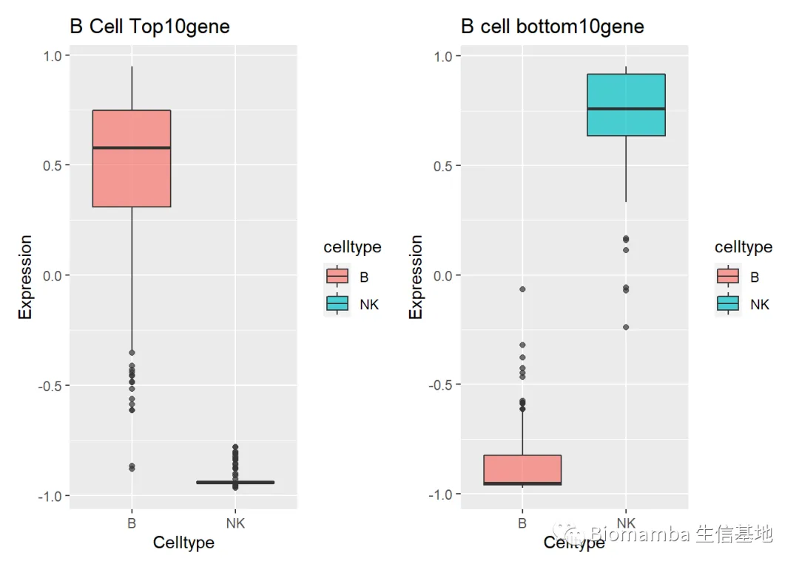
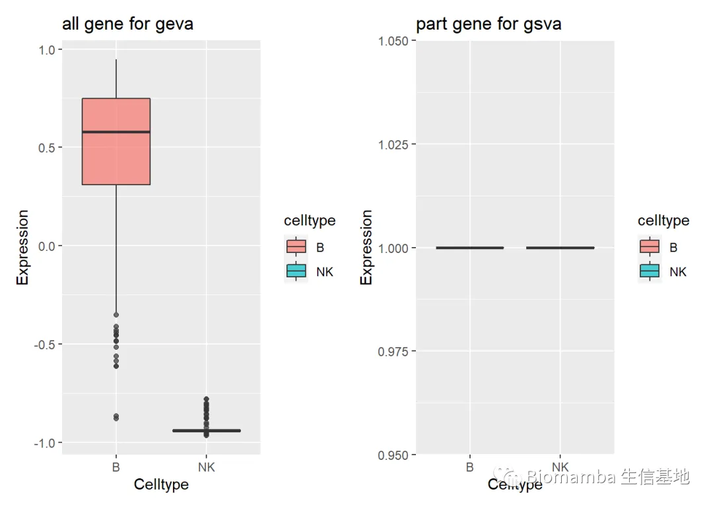

单细胞中应该如何做GSVA？
原文：https://mp.weixin.qq.com/s?__biz=MzAwMzIzOTk5OQ==&mid=2247484701&idx=1&sn=ad90680f252d092a2e21f349c8f32cab&chksm=9b3f7c4dac48f55bf1d11337406ab0e1295e8e1731dbac0715eedc99d11beff7f380e42dd49b#rd 合集：单细胞教程全收录
铺垫了很久
此前我们已经花了三篇推送的篇幅去详细介绍了GSVA：
问题
做这一系列的推送是因为我在做单细胞测序时遇到了一些问题：
1、Seurat对象中的矩阵那么多，我们应该取出哪一个用于GSVA分析？
2、Seurat的矩阵那么大，我可不可以取出仅包含目的基因的矩阵做GSVA分析？
我来自问自答一下：
问题1：根据我们在一文搞定GSVA及下游分析的代码实现中的描述，GSVA的输入数据可以是原始的counts数据，也可以是RNA-seq的表达量，如：log-CPMs,log-RPKMs or log-TPMs。确实离我第一次做单细胞测序过去了太久的时间，很久都没有思考过这么上游的问题，特意地回去复习了一下自己之前的视频：手把手教你做单细胞测序（三）——单样本分析。显然，作为一个稀疏矩阵，scRNA-Seq的counts与RNA-Seq的counts是具有天壤之别的，因此Seurat中的counts（也就是你最初read10X()时得到的那个dgMatrix）是不推荐使用的。那么Seurat对象中还存有两个矩阵，一个是NormalizeData()函数产生的标准化后的矩阵,这个矩阵是取过log的，类似于完成了log1p的操作，得到的结果就类似于TPM的对数，存在pbmc[["RNA"]]@data里。另一个是Scale()函数以各个细胞为方向归一化之后的矩阵，存在pbmc[["RNA"]]@scale.data。考虑到GSVA计算前还会进行一步Scale的操作，这里我认为输入pbmc[["RNA"]]@data的数据是最优的选择。可能上面这段文字还是会让大多数读者摸不着头脑，那我们来实战一下：还是以我们在单样本中用到的‘pbmc’数据为例：
先准备一下测试数据集，这个数据集和代码都可以在后台回复“单细胞GSVA”领取
library(Seurat)
## Warning: package 'Seurat' was built under R version 4.0.5
## Registered S3 method overwritten by 'spatstat.geom':
## method from
## plot.imlist imager
## Attaching SeuratObject
pbmc <- readRDS('pbmc.rds')
DimPlot(pbmc)

pbmc$celltype <- Idents(pbmc)
pbmc <- subset(pbmc,idents = c('B','NK'))
准备基因集
#找到B cell相较于NK而言表达量最高的10个基因和表达量最低的10个基因
bcell.marker <- FindMarkers(pbmc,ident.1 = 'B',ident.2 = 'NK')
library(dplyr)
## Warning: package 'dplyr' was built under R version 4.0.5
##
## Attaching package: 'dplyr'
## The following objects are masked from 'package:stats':
##
## filter, lag
## The following objects are masked from 'package:base':
##
## intersect, setdiff, setequal, union
top10gene <- bcell.marker %>% top_n(n = 10, wt = avg_log2FC) %>% rownames()
bottom10gene <- bcell.marker %>% top_n(n = -10, wt = avg_log2FC) %>% rownames()
#构建基因集用于GSVA
mygeneset <- cbind(top10gene,bottom10gene)
mygeneset <- as.data.frame(mygeneset)
表达量，你得这么取
gene.expr <- as.matrix(pbmc[["RNA"]]@data)
dim(gene.expr)
## [1] 13714 499
GSVA 分析反而是最容易的
如果你这里看不明白，参考一下我们前面的几篇推送
library(GSVA)
gsva.result <- GSVA::gsva(gene.expr, mygeneset,kcdf='Gaussian')
## Warning in .filterFeatures(expr, method): 1518 genes with constant expression
## values throuhgout the samples.
## Warning in .filterFeatures(expr, method): Since argument method!="ssgsea", genes
## with constant expression values are discarded.
## Estimating GSVA scores for 2 gene sets.
## Estimating ECDFs with Gaussian kernels
##
|
| | 0%
|
|=================================== | 50%
|
|======================================================================| 100%
处理一下表达矩阵
mymatrix <- t(gsva.result)
mymatrix <- cbind(mymatrix,as.data.frame(pbmc$celltype))
colnames(mymatrix)[ncol(mymatrix)] <- 'celltype'
head(mymatrix)
## top10gene bottom10gene celltype
## AAACATTGAGCTAC-1 0.2632557 -0.7344146 B
## AAACCGTGTATGCG-1 -0.9260627 0.7892429 NK
## AAACTTGAAAAACG-1 -0.0721821 -0.7002969 B
## AAAGGCCTGTCTAG-1 -0.1673577 -0.3768904 B
## AAAGTTTGATCACG-1 0.6417520 -0.9512555 B
## AAAGTTTGGGGTGA-1 0.1239729 -0.6812606 B
把这两个通路的GSVA结果画成箱线图
library(ggplot2)
## Warning: package 'ggplot2' was built under R version 4.0.5
mytop <- ggplot2::ggplot(mymatrix,aes(x=celltype,y=top10gene,fill=celltype))+
geom_boxplot(alpha=0.7)+
scale_y_continuous(name = "Expression")+
scale_x_discrete(name="Celltype")+
labs(title ='B Cell Top10gene')
mybottom <- ggplot2::ggplot(mymatrix,aes(x=celltype,y=bottom10gene,fill=celltype))+
geom_boxplot(alpha=0.7)+
scale_y_continuous(name = "Expression")+
scale_x_discrete(name="Celltype")+
labs(title ='B cell bottom10gene')
library(patchwork)
mytop|mybottom

可以看出，这两个基因集的表达量是符合我们的预期的
GSVA 差异分析你可以参考这篇：
一文搞定GSVA及下游分析的代码实现
不想写代码，我也写了在线工具给你们:
给你安排一个懂生信的工具人（七）：不会有人真的只会做T检验吧
问题2：
这个问题其实我们也在文献阅读系列（九）、一文了解GSVA原理谈到过，简单来说，下面这个中间量的计算公式中的P值是矩阵的基因数，也就是说P值的改动是会影响最终的GSVA score的

同样的，我们以事实说话:
还是先准备一下测试数据集
library(Seurat)
## Warning: package 'Seurat' was built under R version 4.0.5
## Registered S3 method overwritten by 'spatstat.geom':
## method from
## plot.imlist imager
## Attaching SeuratObject
pbmc <- readRDS('pbmc.rds')
DimPlot(pbmc)
pbmc$celltype <- Idents(pbmc)
pbmc <- subset(pbmc,idents = c('B','NK'))
还是准备好基因集
bcell.marker <- FindMarkers(pbmc,ident.1 = 'B',ident.2 = 'NK')
library(dplyr)
## Warning: package 'dplyr' was built under R version 4.0.5
##
## Attaching package: 'dplyr'
## The following objects are masked from 'package:stats':
##
## filter, lag
## The following objects are masked from 'package:base':
##
## intersect, setdiff, setequal, union
top10gene <- bcell.marker %>% top_n(n = 10, wt = avg_log2FC) %>% rownames()
top10gene <- as.data.frame(top10gene)
准备完整的和仅包含目的基因的矩阵,进行GSVA分析
all.gene.expr <- as.matrix(pbmc[["RNA"]]@data)
part.gene.expr <- as.matrix(pbmc[["RNA"]]@data)[top10gene[,1],]
library(GSVA)
system.time(all.gsvs.result <- GSVA::gsva(all.gene.expr, top10gene,kcdf='Gaussian'))
## Warning in .filterFeatures(expr, method): 1518 genes with constant expression
## values throuhgout the samples.
## Warning in .filterFeatures(expr, method): Since argument method!="ssgsea", genes
## with constant expression values are discarded.
## Estimating GSVA scores for 1 gene sets.
## Estimating ECDFs with Gaussian kernels
##
|
| | 0%
|
|======================================================================| 100%
## user system elapsed
## 9.86 0.32 10.18
system.time(part.gsva.result <- GSVA::gsva(part.gene.expr, top10gene,kcdf='Gaussian'))
## Estimating GSVA scores for 1 gene sets.
## Estimating ECDFs with Gaussian kernels
##
|
| | 0%
|
|======================================================================| 100%
## user system elapsed
## 0.11 0.00 0.11
#时间上确实节省了很多，那我们来看看结果有什么差别
all.gsvs.result[,1:10]
## AAACATTGAGCTAC-1 AAACCGTGTATGCG-1 AAACTTGAAAAACG-1 AAAGGCCTGTCTAG-1
## 0.2632557 -0.9260627 -0.0721821 -0.1673577
## AAAGTTTGATCACG-1 AAAGTTTGGGGTGA-1 AAATCAACAATGCC-1 AAATCCCTGCTATG-1
## 0.6417520 0.1239729 0.4371864 0.5609500
## AAATTCGATTCTCA-1 AACCGATGGTCATG-1
## -0.8307829 0.9135073
part.gsva.result[,1:10]
## AAACATTGAGCTAC-1 AAACCGTGTATGCG-1 AAACTTGAAAAACG-1 AAAGGCCTGTCTAG-1
## 1 1 1 1
## AAAGTTTGATCACG-1 AAAGTTTGGGGTGA-1 AAATCAACAATGCC-1 AAATCCCTGCTATG-1
## 1 1 1 1
## AAATTCGATTCTCA-1 AACCGATGGTCATG-1
## 1 1
table(all.gsvs.result==part.gsva.result)#好嘛，一点都不一样了
##
## FALSE
## 499
跟之前一样，还是画个箱线图来看一下效果
mymatrix <- cbind(t(all.gsvs.result),t(part.gsva.result),as.data.frame(pbmc$celltype))
colnames(mymatrix) <- c('All','Part','celltype')
head(mymatrix)
## All Part celltype
## AAACATTGAGCTAC-1 0.2632557 1 B
## AAACCGTGTATGCG-1 -0.9260627 1 NK
## AAACTTGAAAAACG-1 -0.0721821 1 B
## AAAGGCCTGTCTAG-1 -0.1673577 1 B
## AAAGTTTGATCACG-1 0.6417520 1 B
## AAAGTTTGGGGTGA-1 0.1239729 1 B
library(ggplot2)
## Warning: package 'ggplot2' was built under R version 4.0.5
myall <- ggplot2::ggplot(mymatrix,aes(x=celltype,y=All,fill=celltype))+
geom_boxplot(alpha=0.7)+
scale_y_continuous(name = "Expression")+
scale_x_discrete(name="Celltype")+
labs(title ='all gene for geva')
mypart <- ggplot2::ggplot(mymatrix,aes(x=celltype,y=Part,fill=celltype))+
geom_boxplot(alpha=0.7)+
scale_y_continuous(name = "Expression")+
scale_x_discrete(name="Celltype")+
labs(title ='part gene for gsva')
library(patchwork)
myall|mypart

这结果不用解读了，以后大家进行GSVA分析，配置允许的情况下最好还是选择所有基因的表达矩阵作为输入数据，这里我们举的例子比较极端，只输入目的基因的表达矩阵会导致所有的gsva score变成1，当你有很多个基因集的时候这种情况可能会好转，但是这种偏差仍然是存在的
本篇推送的代码与测试数据在公众号后台回复“单细胞GSVA”领取
最近发现后台中有一些消息我没能及时看到并答复，微信后台中超过48h后便不允许回复读者消息，这里还是再给大家留一下答疑的扣扣号，方便大家随时交流。大家可以阅读完这两篇之后添加我：答疑公约 笑一笑也就算了